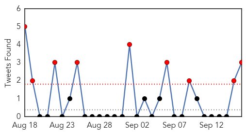
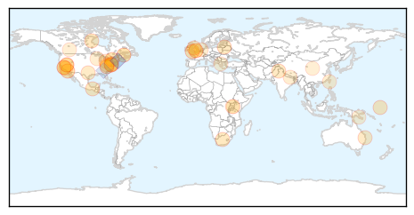
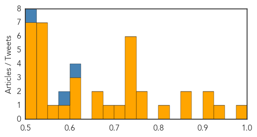

Unknown
30-Day Web Trend
0 alerts, 0 warnings

30-Day Twitter Trend
9 alerts, 0 warnings

Article Locations

Article Confidences
Top Articles:
- 0.986
- HFM disease scare at schools unfounded
- 0.933
- Health unit no longer holding flu shot clinics
- 0.922
- More people sickened by salmonella in cucumbers
- 0.912
- 200 Teign School children are treated for infection after outbreak of tuberculosis
- 0.866
- Russian support for Assad may worsen Syrian conflict -Kerry
- 0.856
- Despite lingering summer weather, flu season is quickly approaching - Story
- 0.806
- Recalled cucumbers sicken 2 more people in Clark Co.
- 0.769
- Fish ruled out as salmonella cause
- 0.759
- Three Salmonella Outbreaks
- 0.747
- Factors examined that may contribute to higher risk of death following hip fracture surgery compared to hip replacement
- 0.741
- Salmonella outbreak investigation at Burnside Hospital rules out imported fish -
- 0.740
- Cucumber-related salmonella outbreak spreads
- 0.735
- The Dark Side of HPV Vaccines
- 0.733
- [NGO Statements] How to promote Health in the WHO European Region?
- 0.728
- New Salmonella Outbreak Linked to Minn. Chipotle Restaurants
- 0.700
- 5900 Doctors For Population of More Than 1 Cr
- 0.683
- Nearly 200 children infected with tuberculosis following a major outbreak at Devon school
- 0.670
- Duh alert: Salmonella outbreak investigation at Australian hospital rules out imported fish (check the egg dishes)
- 0.664
- More Than 400 Illnesses Reported in Latest Salmonella Outbreak
- 0.619
- Harford County Health Department Recognizes World Rabies Day; Offers Annual Pet Vaccination Clinic
- 0.612
- Plague cases reported in California, Colorado
- 0.606
- NASA Glenn Research Center: Employee diagnosed with Legionnaires’ disease
- 0.592
- Millions of children's lives saved as malaria deaths plunge -UN
- 0.569
- Infectobesity: Adenovirus 36 and Childhood Obesity
- 0.549
- Nearly $10 Million in Funding Awarded to West Virginia Community Health Centers
- 0.549
- VU: “Hopes” to re-open hospital next week after water main break
- 0.547
- Dearth of drug hits patients
- 0.537
- Kids and antibiotics
- 0.532
- USFS to close some sites in South Lake Tahoe to address plague issue
- 0.530
- Two more in Clark County sickened in salmonella outbreak - Wednesday, Sept. 16, 2015
- 0.529
- Staff in operating theatre highly trained, dedicated professionals
- 0.521
- Fight against TB in Papua New Guinea: 'Embarrassment of riches' moment?
- 0.515
- Les députés donnent le feu vert pour relocaliser 120.000 demandeurs d'asile supplémentaires dans l'UE
- 0.515
- Feature: Uganda hails China's medical aid as demand outstrips provision
- 0.512
- Experts question the evidence underpinning e-cigarette recommendations - Rochdale Online
- 0.510
- From River to Tap: How is our drinking water treated and tested?
- 0.509
- Feature: Uganda hails China's medical aid as demand outstrips provision
- 0.509
- Feature: Uganda hails China's medical aid as demand outstrips provision - Xinhua
Top Tweets:
- 0.616
- A5: Postpone travel if you have flu symptoms. Wait 24 hrs+ after fever is gone w/o using fever-reducing meds before traveling. CDCprep
- 0.579
- RT: Chers pensez-vous faire un débat en Haiti le pays que vous…
- 0.521
- RT: Quand candidats pour présidence Haiti vont séduire un public à Washington DC ça donne une idée de qui dirige la politiqu…